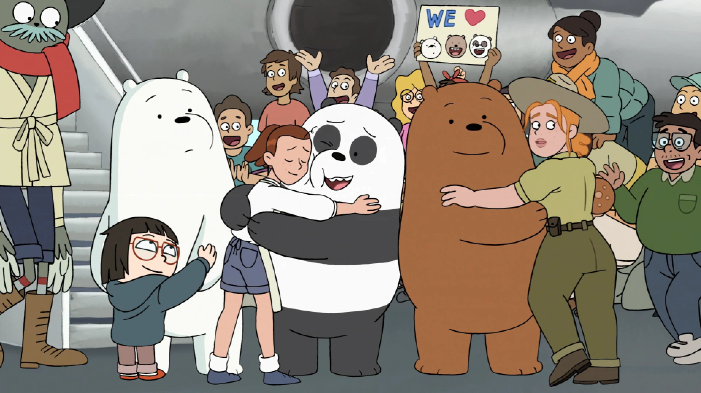

| Home page | Character Page |
We Bare Bears is an American animated series created by Daniel Chong for Cartoon Network. The show follows three bear brothers, named Grizzly, Panda and Ice Bear, and their awkward attempts at integrating with the human world in the San Francisco Bay Area.
The series was based on Chong's webcomic The Three Bare Bears, and the pilot episode made its world premiere at the KLIK! Amsterdam Animation Festival, where it won in the "Young Amsterdam Audience" category. The show premiered on July 27, 2015, and ended on May 27, 2019, and ran for four seasons and 140 episodes.
